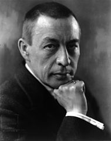

Серге́й Васи́льевич Рахма́нинов

The last great Russian Romantic
Timeline of Rachmaninoff's Life
-
1873 - Born in Veliky Novgorod, Russian Empire
-
1883 - Enters the Saint Petersburg Conservatory
-
1885 - Despite gaining recognition for spectacular performance and composition ability, begins performing poorly in his academic studies, amidst family tragedy, strife, and apathy. Attends Moscow Conservatory to study under Nikolai Zverev, at the suggestion of Alexander Siloti
-
1891 - Begins composing his first piano concerto, among other works including Aleko and his Trio élégiaque No. 1
-
1892 - Receives the Great Gold Medal from the Moscow Conservatory and his diploma. Officially becomes a "free artist" at the age of 19
-
1893 - Begins composing his Trio élégiaque No. 2 after the tragic death of Pyotr Ilyich Tchaikovsky
-
1897 - Falls into depression after his First Symphony receiving poor critical reception and stops composing
-
1900 - Undergoes therapy with psychologist Nikolai Dahl to recover from writer's block
-
1901 - Finishes his second piano concerto, which is well received by critics.
-
1902 - Marries his fiancée Natalia Satina, with whom he has two daughters
-
1909 - Completes his third piano concerto and tours the United States for the first time. Receives many offers to work and conduct in America but declines them all
-
1915 - Goes on a tour devoted entirely to his good friend Alexander Scriabin after Scriabin's early death
-
1917 - Forced to emigrate due to the Russian Revolution and begins holding concerts in Scandinavia due to financial hardships
-
1918 - Leaves Europe for America where he began touring and delivers many concerts to support his family. His busy work schedule and homesickness would greatly hinder his desire to compose music
-
1928 - Befriends Vladimir Horowitz, with whom he regularly collaborated
-
1932 - Completes a new villa in Switzerland, where he would compose Rhapsody on a Theme of Paganini, his third symphony, and his Symphonic Dances over the following six summers
-
1942 - Falls ill and is diagnosed with melanoma
-
1943 - Dies of melanoma in Beverly Hills, California at age 69
Further reading
Rachmaninoff Network
Wikipedia
Allmusic
Classical Net